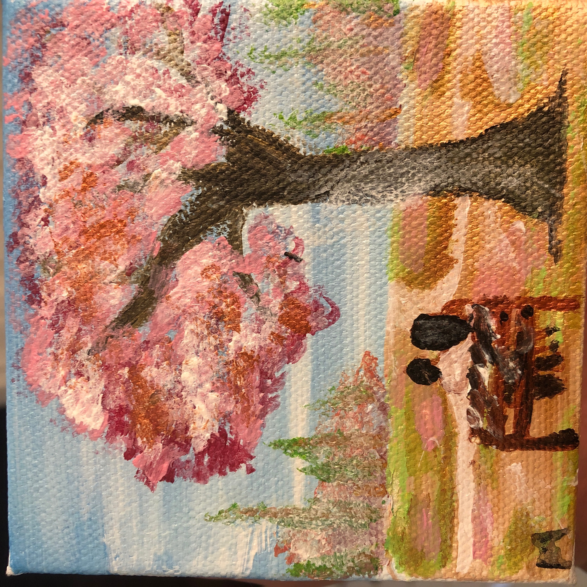
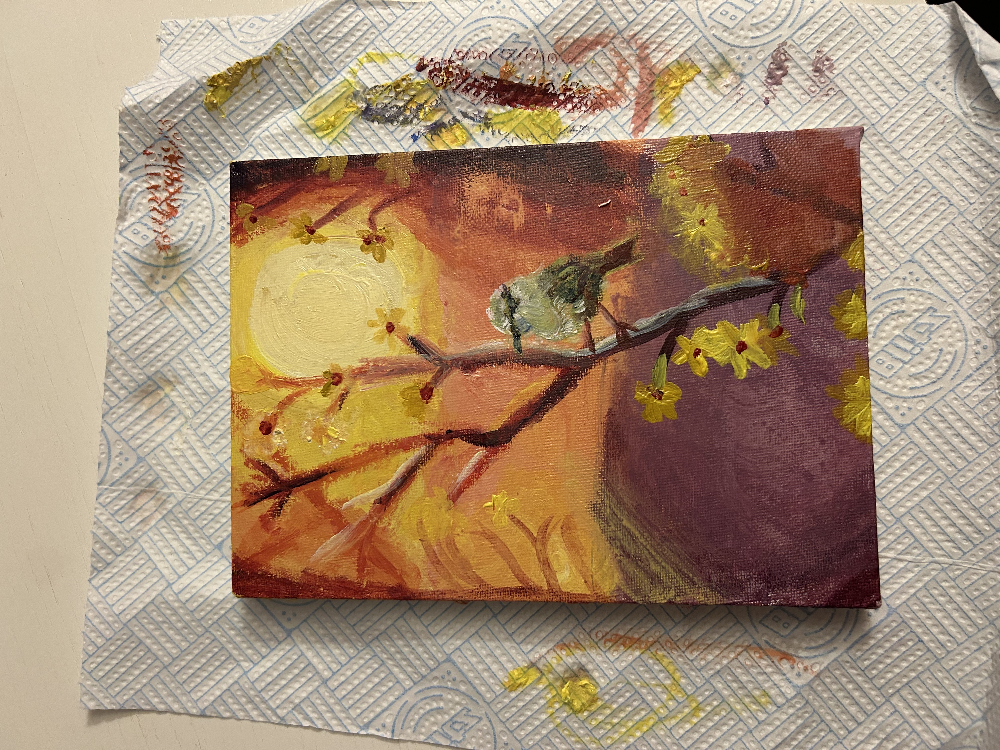
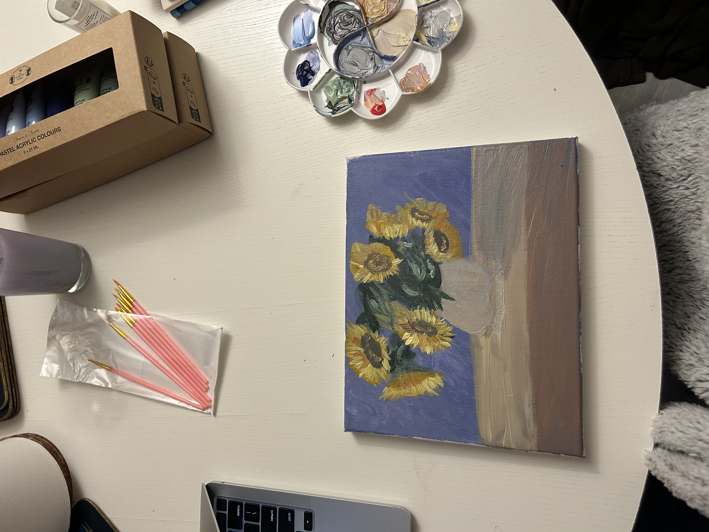
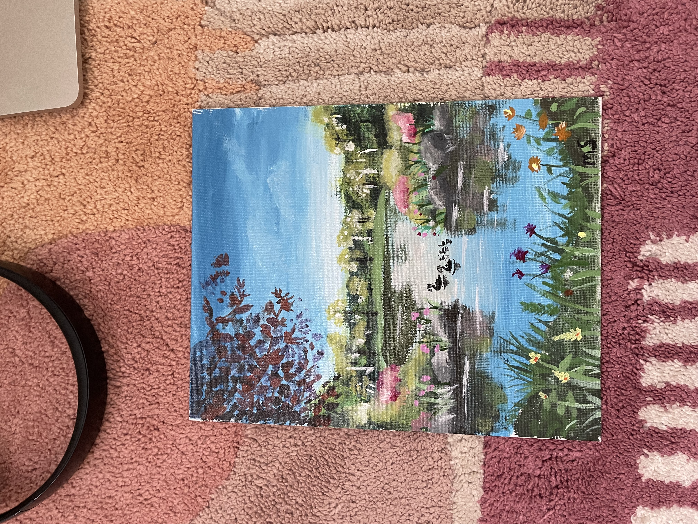

product designer, based in london
The short version: computer scientist by training, designer by choice, still can't decide between the two, so I do both.
I'm a product designer with a background in Computer Science, currently working as a senior interaction designer. I have always been drawn to STEM and engineering (I was even president of my high school's engineering club), but I was just as drawn to art, and took art classes all through school too. Product design turned out to be the place where both of those interests could actually live together: the structured, systems-thinking side of engineering, and the visual, expressive side of art.
Right now I work in healthcare, designing new features and improving existing ones on a large digital health platform. But I want to be clear about something: I'm a product designer who happens to have a lot of experience in healthcare, not a healthcare designer. The skills transfer. I've designed for complex systems, ambiguous constraints, and high-stakes users, and I'm looking for the next problem to apply that to, wherever it lives.
Design values
Design with the user's need, not around it
If a product doesn't address a real user need, nobody is going to use it, no matter how polished it looks. I start there and keep coming back to it.
Empathise, with everyone in the room
Not just the user. The client, the stakeholders, the engineers building it. Empathy is how you find out you're solving the right problem in the first place.
Teamwork gets you further than talent alone
I can take a project from research to delivery on my own, but a fresh pair of eyes and someone else's perspective is often exactly what turns a good product into a great one.
Fun facts




A few of mine. I paint mostly on small canvases, acrylic and oil.
Experience
Senior Interaction Designer
Design new features and uplift existing ones on a healthcare platform. I create the designs, sit in on and take notes during research sessions testing my own work, iterate from what we learn, and take designs through governance processes like Design Assurance. I make sure work is accessible, bring it to crits with the wider design community, work closely with engineers on technical feasibility, and onboard the designs to external companies adopting them onto their own platforms.
Year in Industry, Accenture
Split between two roles: half as a Data Analyst, half as a PMO Analyst. My first real look at how large organisations actually run projects.
Morgan Stanley Technology Insight Programme
A closer look at technology at Morgan Stanley: the day-to-day life of a software engineer there, team and learning exercises, and time with managing directors, engineers, and executives.
Intern, Zaelab
Migrated their expense reporting system, reporting directly to the accounting director.
A handful of projects from a national health design programme, told the way they actually happened: the context, the hard calls, and what came of it. Screens are withheld for client confidentiality.
Appointment and referral management
A national standard for how patients understand and manage their healthcare appointments, built to hold up across hundreds of regional providers and legacy systems.
Read case studyPatients were attending appointments despite existing digital notifications, not because of them. Most prepared out of anxiety caused by unclear information. This project was about fixing the basics: one national standard that works for every patient, across every regional provider, regardless of what software sits underneath.
1Context: why this project exists
A patient gets a notification that reads "virtual appointment booked." They don't know if that means video or telephone. They don't know whether to travel. So they prepare for both, just in case, and show up stressed either way. This mattered because it wasn't a one-off complaint: it was happening at national scale, across a patient population that includes people with low digital confidence and high anxiety about healthcare in general.
2Research, five rounds, 100+ participants
| Round | Method | Participants | Focus |
|---|---|---|---|
| 1 | Survey | 13 | Baseline readiness barriers, community accessibility groups |
| 2 | Co-design | 12 | What reassurance do patients need, and in what form? |
| 3 | Moderated usability | 8 | Two prototype variants across three consultation mediums |
| 4 | Unmoderated (A/B) | 34 | Confirm attendance, video joining, clinician name placement |
| 5 | Validation | 34 | Final design validation |
Every round included participants with low digital confidence, visual impairments, and mental health conditions. The same finding surfaced every time: patients didn't trust the notifications, so they compensated with stressful personal workarounds.
3Key design moments
Should "Confirm Attendance" work the same way everywhere?
The obvious answer was yes, one consistent pattern, simple to build and simple to maintain. But some regional providers couldn't expose real-time booking data to a central system, so a single confirmation pattern would have implied a live connection that didn't exist for everyone. I designed three variants of the same interaction instead, each tuned to what the underlying provider system could actually support, while keeping the patient-facing language identical. It was more work to design and harder to explain in governance, but a single fake-simple pattern would have quietly broken trust the first time a confirmation didn't behave as promised.
How literal should "no travel required" be?
Early drafts treated a telephone appointment like a lighter version of an in-person one. Research showed patients still packed bags, arranged childcare, and asked for time off work for phone calls, because nothing on screen actively told them not to. The fix was almost embarrassingly small: an explicit line stating no travel was needed. It tested better than any more elaborate design we tried, which was a good reminder that the highest-impact decision isn't always the most interesting one to present.
4What shipped
The consultation medium standard, the three confirm-attendance variants, and a three-state video joining flow (opens in-app, opens in browser, or unavailable, each with fallback guidance) all went live. Full screens are withheld here under client confidentiality, but the interaction specs and governance documentation exist and I can walk through them directly.
5Governance and clinical safety
I led the UCD deliverables through formal Design Assurance and clinical safety sign-off: scoping hazard workshops, coordinating cross-functional input, and presenting to governance boards from submission through to sign-off, which enabled rollout across connected providers.
6Impact
The standard is now live and being adopted across regional trusts, reducing the ambiguity that was driving unnecessary patient anxiety and duplicated preparation. Because it's a shared standard rather than a one-off feature, every provider that adopts it inherits the research behind it, not just the screens.
7Reflection
Designing at national scale means designing for constraints you'll never fully see. I went in expecting the interesting problems to be visual. They weren't. The decisions that actually moved the needle were about precise, unglamorous wording and about being honest in the interface about what the system could and couldn't promise in real time.
Key takeaway
A system that's honest about its own limitations builds more trust than one that fakes consistency it can't deliver.
Questionnaires and documents
Adapting clinical questionnaires for mental health secondary care, designed for high cognitive load and emotional vulnerability.
Read case studyStandard portal designs weren't built for mental health settings, where patients may be in distress, cognitive load is elevated, and rigid design patterns can trigger unnecessary anxiety. This project adapted those experiences for specialised healthcare providers nationwide.
1Context: why this project exists
Patterns that work fine for routine care, mandatory question completion, "to do" badges, bright urgency tags, were actively causing anxiety in mental health service users. Linear questionnaire steps forced patients to answer in strict order, which broke existing non-digital habits and led to people abandoning the task altogether.
2Research, 69+ participants across three methods
Unmoderated sessions testing content formats, one-to-one usability testing with mental health service users (including participants with neurodivergence and sensory impairments), and quantitative validation rounds.
3Key design moments
Letting people answer out of order, safely
Removing strict linear validation was the controversial call: it's a pattern that exists for good technical and data-quality reasons, and dropping it meant convincing engineering and clinical stakeholders it wouldn't compromise the data. I proposed flexible navigation that let patients move freely between questions without losing progress, backed directly by the research finding above. It shipped, and it's the single change I'd point to first if asked what mattered most on this project.
Softening the task language
Action-heavy imperative copy ("Complete this now") reads as neutral in most products. In this context it read as pressure. I rewrote task language into more supportive, less commanding phrasing, and added optional content warnings before sensitive topics so patients could brace themselves rather than being surprised mid-task.
4What shipped
Flexible non-linear navigation, contextual "what to expect" guidance screens, softened task language, hidden-by-default completed tasks, and explicit save-and-pause options across every step. Screens withheld under client confidentiality.
5Governance
Designs passed formal clinical safety review and UCD governance before expanding into active deployment across regional mental health providers.
6Impact
Now live across regional mental health providers. The clearest signal of success wasn't a metric, it was that clinical stakeholders who were originally cautious about relaxing the linear flow became advocates for it once they saw the research.
7Reflection
I learned to be more careful about which "best practice" patterns I default to. Linear form validation is best practice in most contexts. Here it was actively harmful, and the only way to know that was to sit in the research sessions myself rather than work from a summary.
Key takeaway
Best practice isn't universal. The right pattern depends on who's using it and what state they're in when they do.
Rescheduling uplift
Three adaptable rescheduling journeys that accommodate varied technical backends without confusing the patient.
Read case studyNot every regional provider can stream real-time calendar availability to a central application. Patients trying to reschedule kept hitting dead ends, driving up contact centre volumes and missed appointments. The goal was an experience that adapts across wildly different provider tech capabilities without ever feeling broken to the patient.
1Context: why this project exists
A dead end in a booking flow doesn't just fail quietly. It pushes the patient to call a contact centre, which is slower for them and more expensive for the provider. Fixing this meant designing for the worst-supported provider in the network, not the best-supported one.
2Key design moments
Killing the interactive calendar
An interactive calendar grid was the obvious, expected pattern, and it was also the wrong one. Testing showed it implied immediate live booking. When the backend actually required manual processing behind the scenes, that implied promise broke on delivery and trust dropped sharply. I replaced it with a clear preference-selection step instead of a calendar, a harder sell internally because it looked, on paper, like a step backward in polish.
3What shipped
Three configurable journeys: live slot selection where the backend supports it, preference selection (day and time windows) where it doesn't, and request-based routing for complex care plans needing prior clinical triage. Confirmation screens were reordered to lead with status and realistic response timeframes rather than a false sense of instant confirmation.
4Impact
All three journey variations passed programme governance and are reducing dead ends for non-integrated providers, while keeping patient expectations accurate regardless of which backend they land on.
5Reflection
This project taught me that consistency and honesty aren't the same thing. Making three journeys look and feel coherent was harder than making one polished flow, but a single dishonest flow would have been worse for every patient it touched.
Key takeaway
Don't let the interface promise more certainty than the system behind it can actually deliver.
Patient-led booking standard
Interaction standards for patient-initiated slot selection across public health platforms.
Read case studyIn certain clinical pathways, booking responsibility sits with the patient once they receive an invitation, rather than through automatic appointment assignment. This project establishes consistent interaction models for that kind of self-directed booking across public digital channels.
1Context and scope
My UCD responsibilities spanned from scoping user needs and interaction principles through to component guidelines and accessibility specs: differentiating invitation states from confirmed appointments, designing calendar and slot selection patterns for web and mobile, structuring booking confirmation and error recovery states, and defining technical requirements for integration teams.
2Impact
Clear interaction patterns that hold consistency across varied technical providers, while keeping accessibility and clarity for the end user. Currently in design and research iteration.
Key takeaway
A standard only earns its name if it can flex to its weakest adopter without breaking for everyone else.
HCI dissertation
Academic research in human-computer interaction, undertaken as part of my Computer Science degree.
Read moreMy final year dissertation focused on human-computer interaction principles and user accessibility methods: defining research questions, gathering empirical participant data, running usability evaluations, and translating the findings into functional UI recommendations. It's the research foundation everything since has built on.
What people say
"Maya leads interaction design with great clarity, not just producing UI artifacts, but actively synthesizing complex service context into coherent, evidence-based design decisions."
Design Practice Lead, Digital Consultancy
"Maya led the design assurance and clinical sign-off processes for complex features in challenging constraints. She took ambiguous requirements and established a structured, confident UCD delivery route."
User Research Lead, Public Sector Practice
"Maya is an exceptionally capable designer. Her prototypes and design documentation are structured, clear, and seamlessly organized for cross-functional engineering teams."
Senior Interaction Designer, Health Practice
"Maya has earned total trust across stakeholders to deliver high-quality interaction design and independently lead core UCD work streams."
Service Design Lead, Public Sector Programme
Skills people tell me I bring to the table
Questions people usually ask
No. I have a lot of experience there, and it happens to be a great training ground for high-stakes, complex, systems-level design, but the skills are portable. I'm a product designer looking for the next interesting problem, wherever it lives.
Research first, always. I'd rather ship something slower and correct than fast and wrong. From there it's iterate, test with real users, and take it through whatever governance the context requires.
A product design role where I can own complex, meaningful problems end to end, ideally somewhere that values research and isn't afraid of a bit of ambiguity.
I'm based in London and open to hybrid or remote roles within the UK. Get in touch and we can talk specifics.
Open to new product design roles. If you'd rather email directly, that works too.